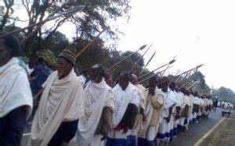
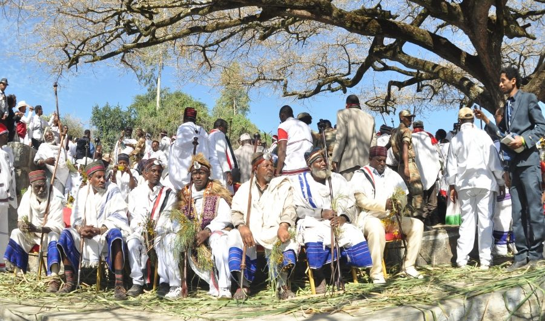
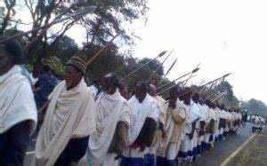
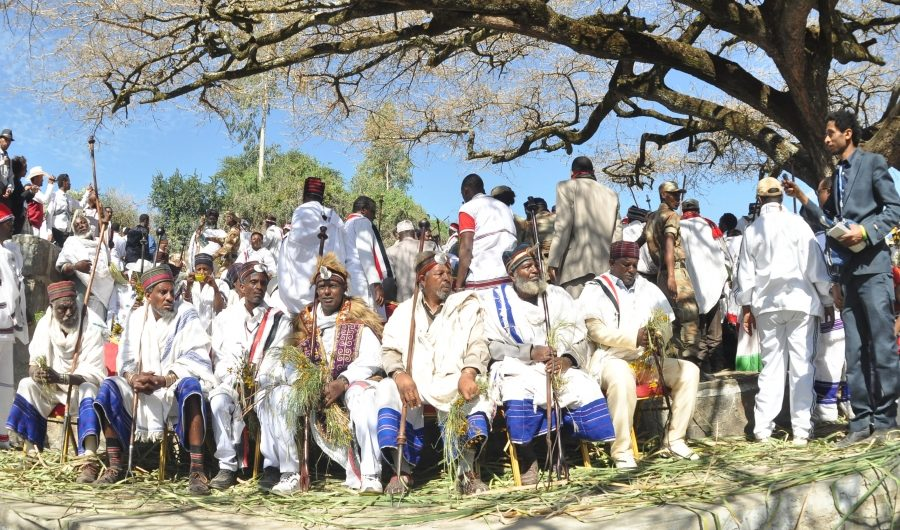

Gada system, an indigenous democratic socio-political system of the Oromo
Gada is a traditional system of governance used by the Oromo people in
Ethiopia developed from knowledge gained by community experience over generations. The system regulates political, economic,
social and religious activities of the community dealing with issues such as conflict resolution, reparation and protecting
womens right. It serves as a mechanism for enforcing moral conduct, building social cohesion, and expressing forms of comm
unity culture. Gada is organized into five classes with one of these functioning as the ruling class consisting of a chairp
erson, officials and an assembly. Each class progresses through a series of grades before it can function in authority with
the leadership changing on a rotational basis every eight years. Class membership is open to men, whose fathers are already
members, while women are consulted for decision-making on protecting women’s rights. The classes are taught by oral historians
covering history, laws, rituals, time reckoning, cosmology, myths, rules of conduct, and the function of the Gada system.
Meetings and ceremonies take place under a sycamore tree (considered the Gada symbol) while major clans have established Gada
centres and ceremonial spaces according to territory. Knowledge about the Gada system is transmitted to children in the home
and at school.
The Gada system is a very huge and complex social institution in which the traditional Oromo people manage their socio political and religious pr
actices. It is a well-developed age-based grouping up on which the religious, political, economic and social life of the people were formed. It is
an indigenous socio-political democratic system of the Oromo people that regulated Political stability, economic development, social activities,
cultural obligations, moral responsibility, and the philosophy of religious order of the society. The political philosophy of Gadaa is based on
three main values: terms of eight years, balanced opposition between parties, and power sharing between higher and lower levels. It is difficult
and beyond the scope this short paper to discuss the Gada system in its fullness.

.jpeg)
.jpeg) 


